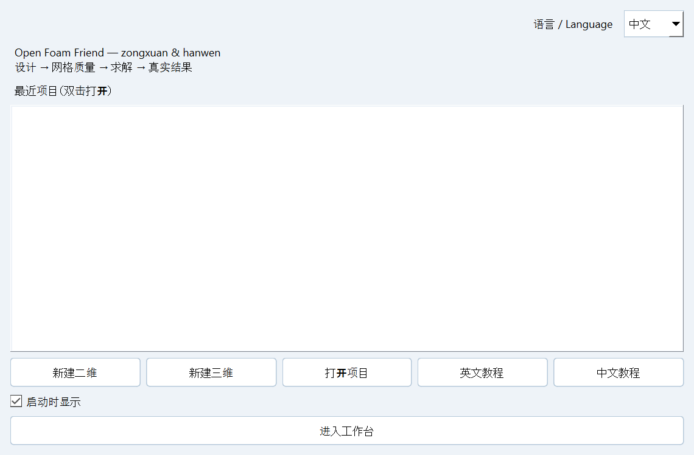
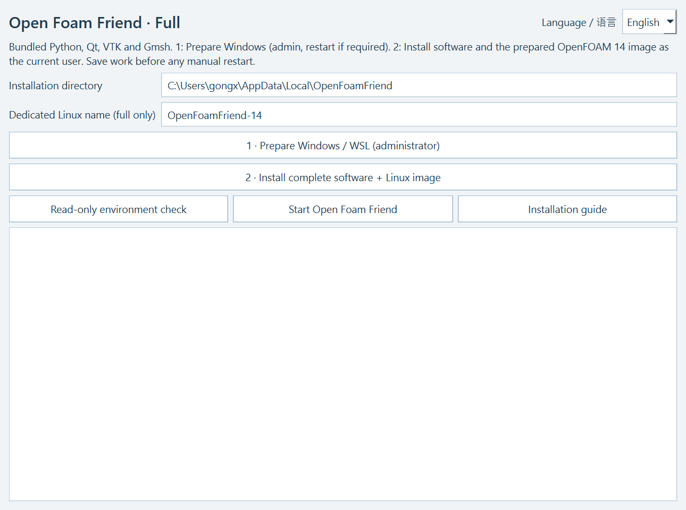

Authors: zongxuan & hanwen · Release: v20260928_164718 · Tested 28 September 2026
Embedded runtime isolated from system Python and user site-packages; PATH contained only Windows directories. Actual clean image imports were performed into independent WSL distributions. Relocated Windows runtime in a Chinese/space-containing folder imported Qt, VTK and Gmsh successfully. / 使用隔离 Python 环境，PATH 仅含 Windows 目录；实际导入独立 WSL 实例；中文及空格路径下 Qt/VTK/Gmsh 正常。
| Case | Mesh | Model | Cells | Ranks | End time / s | Real frames | Max Co | xytuvp MAT | State |
|---|---|---|---|---|---|---|---|---|---|
| OFF_BINDING_R1_20260928_170740 | Structured cylinder O-grid | laminar | 5120 | 4 | 0.04 | 5 | 0.01636293594 | [25600, 6] | DONE |
| OFF_BINDING_R2_20260928_170740 | Manual topology (Gmsh) | laminar | 5120 | 4 | 0.06 | 4 | 0.01000421587 | [20480, 6] | DONE |
| OFF_BINDING_R3_20260928_170740 | Structured cylinder O-grid | kOmegaSST | 5120 | 4 | 0.1 | 6 | 0.01636283995 | [30720, 6] | DONE |
Real GUI submissions and real export dialogs: MAT, CSV, GIF and complete .foam case. Finite arrays, exact time values and reconstructed .foam readability verified. No reused simulation results. Total reserved cores ≤4. These short solves qualify the installation workflow; they do not establish statistically converged physical results. / 实际点击提交与导出，对有限值、真实时间序列和完整 .foam 可读性做了验证；总预留核心≤4。短算例是流程测试，不是物理统计收敛证明。
Welcome language choice switches both dialog and main interface, retains the project, and persists the language preference. FULL and LITE installers switch language; busy progress and disabled operation buttons were tested. Manual topology, guide context, mesh routes, workspace and model catalogue regressions passed. SSH transport was tested with fixtures; no production cluster job was submitted. / 欢迎页语言切换即时生效，保留项目并保存偏好；安装器语言和忙碌反馈已测；原功能回归通过。超算传输为夹具测试，未提交真实集群任务。


Host: Windows 10 19045 x64 with WSL already enabled. A physical machine without Windows WSL features, BIOS virtualization activation, administrator UAC and reboot sequence has not been tested end to end. Windows 11 and other GPU/driver combinations have not been physically tested. Windows feature script was parsed, inspected without mutation, and the Microsoft MSI signature/hash verified. / 主机为 Windows 10 19045 x64，已有 WSL；未在真正缺少 WSL 的另一台实机执行 BIOS/UAC/重启全程，也未实测所有 Windows 11/GPU 配置。脚本语法和只读检查通过，Microsoft MSI 签名及摘要通过。
Installation JSON · Welcome JSON · Installer UI JSON · Solver/export JSON · Regression JSON